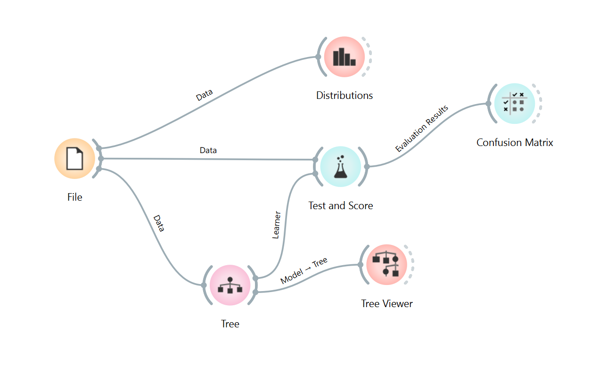
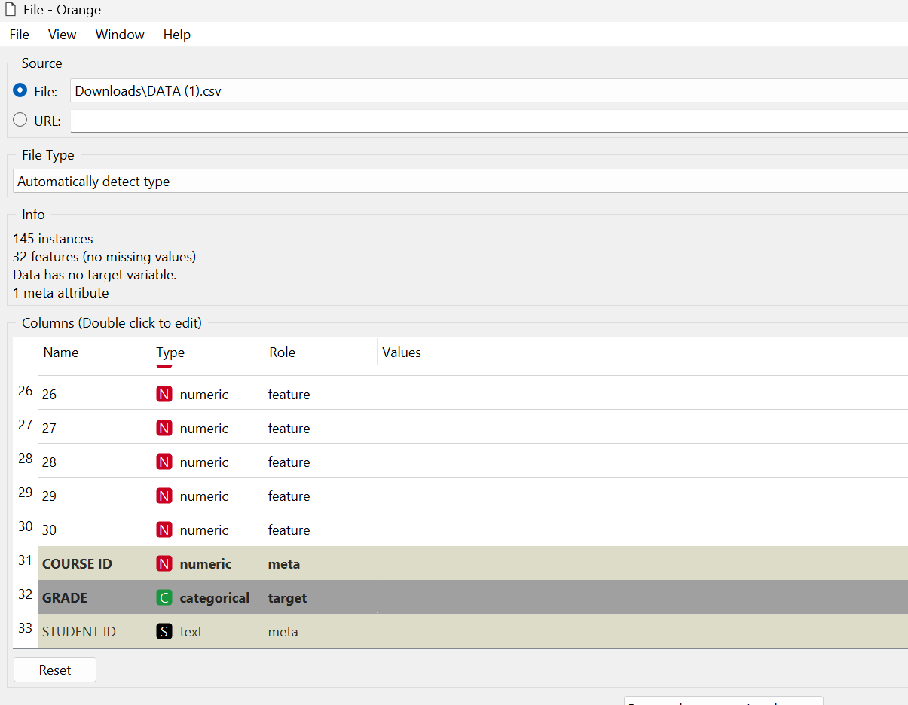
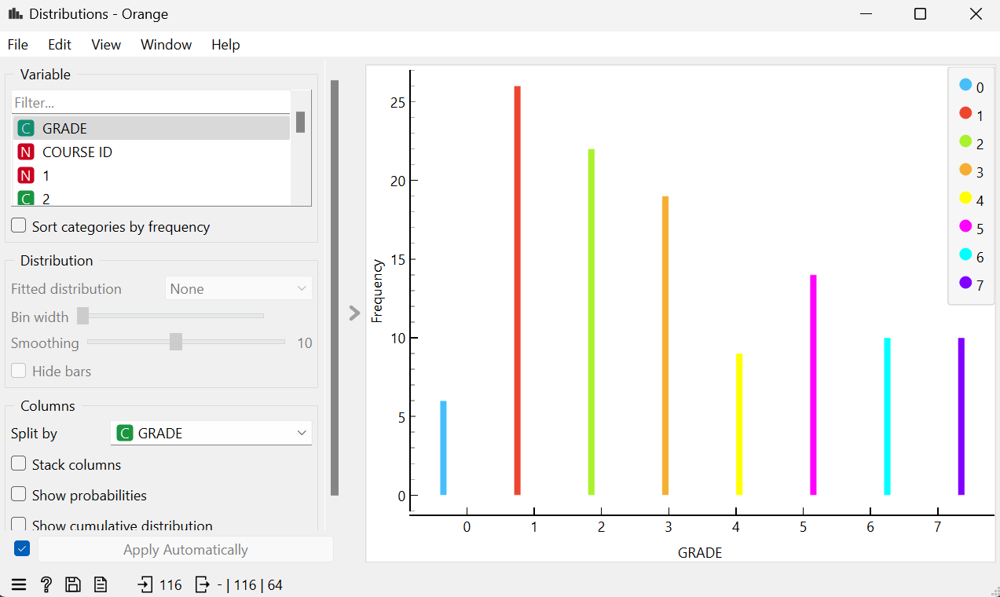
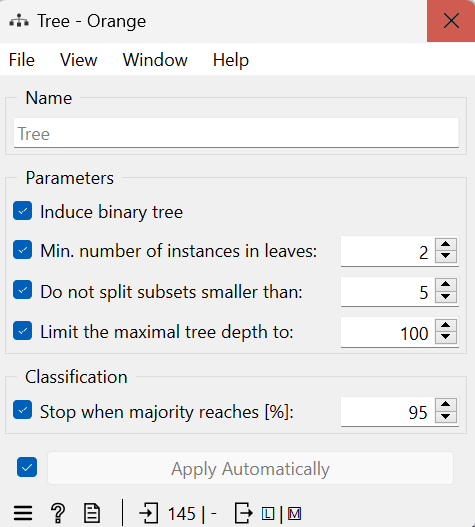
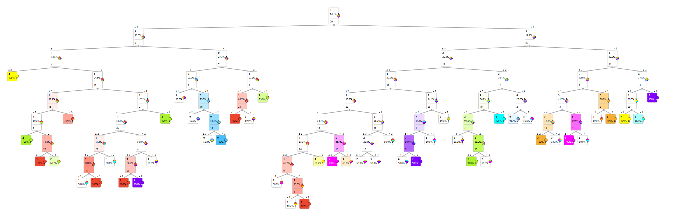
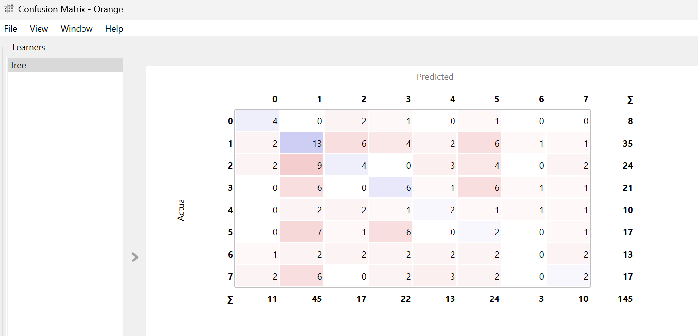

UAS Analisis#
Analisis Komparatif Performa Mahasiswa Berdasarkan Pola Perilaku dan Sosio-Ekonomi Menggunakan Orange Data Mining
Dataset yang digunakan pada eksperimen ini bersumber dari UCI Machine Learning Repository, dengan judul “Higher Education Students Performance Evaluation” : https://archive.ics.uci.edu/dataset/856/higher+education+students+performance+evaluation
Ringkasan dataset :
Keterangan |
Detail |
|---|---|
Nama Dataset |
Higher Education Students Performance Evaluation |
Jumlah Sampel (Instances) |
145 |
Jumlah Fitur (Features) |
31 |
Nilai Kosong (Missing Values) |
Tidak ada |
1. Alur Metode#
Dalam lembar kerja Orange, dibangun sebuah arsitektur alur kerja (workflow) data mining yang terdiri dari beberapa komponen sebagai berikut :

a. File#
Proses utama untuk memuat dataset mentah data.csv. Pada widget ini dilakukan pengaturan krusial:
Stundent ID & Course ID sebagai meta
Kolom 1–30 sebagai features
Mengubah variabel GRADE menjadi target dan tipenya categorical

b. Distributions#
Alat visualisasi untuk melihat grafik batang sebaran frekuensi data mahasiswa pada masing-masing tingkatan nilai GRADE.
Berdasarkan grafik distribusi, jumlah data pada setiap kategori GRADE tidak tersebar secara merata. Kelas Grade 1 memiliki frekuensi tertinggi, yaitu sebanyak 35 mahasiswa, sedangkan Grade 0 merupakan kelas dengan jumlah data paling sedikit, yaitu 8 mahasiswa. Perbedaan jumlah data antar kelas ini menunjukkan adanya ketidakseimbangan kelas (class imbalance) yang perlu diperhatikan karena dapat memengaruhi proses pembentukan dan evaluasi model klasifikasi.

c. Tree#
Berfungsi sebagai algoritma pengklasifikasi tunggal dalam eksperimen ini yang melatih data kuesioner untuk membentuk aturan keputusan (If-Then) berdasarkan pemotongan cabang pohon keputusan otomatis.
Algoritma pelatih berbasis pohon keputusan. Parameter internalnya diatur secara ketat:
Bangun pohon biner
Jumlah minimum data pada setiap simpul daun adalah 2.
Subset yang memiliki kurang dari 5 data tidak akan dibagi lagi. Pengaturan ini digunakan untuk menghasilkan aturan logika klasifikasi berbentuk cabang If-Then.

d. Tree Viewer#
Tree View digunakan untuk menampilkan proses pengambilan keputusan model Decision Tree dalam bentuk pohon. Setiap node berisi aturan pembagian data berdasarkan suatu atribut, sedangkan cabang menunjukkan hasil dari aturan tersebut. Node yang berwarna merupakan hasil akhir (leaf) yang menunjukkan kelas Grade yang diprediksi oleh model. Setiap warna mewakili kelas Grade yang berbeda, sehingga memudahkan dalam membedakan hasil prediksi. Semakin pekat warna pada node, semakin tinggi tingkat dominasi atau keyakinan model terhadap kelas tersebut. Dengan adanya visualisasi ini, proses klasifikasi dapat dipahami dengan lebih mudah karena terlihat bagaimana model membentuk aturan hingga menghasilkan prediksi performa mahasiswa berdasarkan pola perilaku dan faktor sosio-ekonomi.

e. Confusion Matrix#
Berdasarkan Confusion Matrix, baris menunjukkan kelas sebenarnya (Actual), sedangkan kolom menunjukkan hasil prediksi model (Predicted). Nilai yang berada pada garis diagonal dengan warna biru menunjukkan prediksi yang benar, sedangkan nilai di luar diagonal dengan warna merah menunjukkan prediksi yang salah. Semakin pekat warna pada suatu kotak, semakin banyak jumlah data pada kotak tersebut. Pada gambar terlihat bahwa masih banyak kotak berwarna merah dibandingkan biru, sehingga menunjukkan bahwa model Decision Tree masih sering melakukan kesalahan dalam mengklasifikasikan data. Hal ini sejalan dengan nilai akurasi (CA) yang hanya mencapai 0.228%, sehingga kemampuan model dalam memprediksi kelas masih tergolong rendah.

f. Test and Score#
Berdasarkan hasil pengujian, model Decision Tree memperoleh nilai Classification Accuracy (CA) sebesar 0.228 Artinya, model hanya mampu memprediksi dengan benar sekitar 22,8% dari seluruh data yang diuji. Nilai ini menunjukkan bahwa tingkat ketepatan model masih rendah, sehingga hasil prediksi yang diberikan belum cukup baik.

2. Struktur Dataset Asli & Data Understanding#
Dataset asli memiliki total 33 kolom dengan 145 data sampel (baris). Berikut detail isi setiap kolom berdasarkan kamus data riset akademis (Student Performance Dataset).
a. Kolom Identitas & Pendukung#
Kolom |
Keterangan |
|---|---|
STUDENT ID (Meta) |
Identitas anonim mahasiswa (STUDENT1, STUDENT2, dst.). Hanya sebagai label pengenal, tidak masuk perhitungan matematika model. |
COURSE ID (Feature) |
Kode angka pengelompokan mata kuliah yang sedang diambil mahasiswa. |
b. Fitur Perilaku Mahasiswa (Kolom 1–30)#
No. |
Nama Kolom |
Keterangan |
|---|---|---|
1 |
Umur |
1 = 18–22 tahun, 2 = 23–26 tahun, 3 = >26 tahun |
2 |
Jenis Kelamin |
1 = Perempuan, 2 = Laki-laki |
3 |
Asal Sekolah Menengah |
1 = Swasta, 2 = Negeri, 3 = Lainnya |
4 |
Jenis Beasiswa |
1 = Tidak ada, 2 = 25%, 3 = 50%, 4 = 75%, 5 = Full (100%) |
5 |
Status Kerja Sampingan |
1 = Ya (Kuliah sambil kerja), 2 = Tidak |
6 |
Kegiatan Seni/Olahraga Rutin |
1 = Ya, 2 = Tidak |
7 |
Status Pernikahan Mahasiswa |
1 = Menikah, 2 = Belum Menikah |
8 |
Total Pendapatan Orang Tua per Bulan |
1 = Rendah, 2 = Menengah, 3 = Tinggi |
9 |
Tingkat Pendidikan Ayah |
1 = SD, 2 = SMP, 3 = SMA, 4 = S1, 5 = Pascasarjana (S2/S3) |
10 |
Tingkat Pendidikan Ibu |
1 = SD, 2 = SMP, 3 = SMA, 4 = S1, 5 = Pascasarjana (S2/S3) |
11 |
Jumlah Saudara Kandung |
Angka jumlah anak dalam keluarga (1, 2, 3, 4, dst.) |
12 |
Status Pernikahan Orang Tua |
1 = Menikah/Bersama, 2 = Cerai/Berpisah |
13 |
Sektor Pekerjaan Orang Tua |
Pengelompokan jenis pekerjaan orang tua (skala kode 1–5) |
14 |
Jenis Tempat Tinggal |
1 = Asrama Kampus, 2 = Rumah Sendiri, 3 = Kos/Kontrakan, 4 = Lainnya |
15 |
Alasan Memilih Jurusan Kuliah |
1 = Minat Sendiri, 2 = Keinginan Orang Tua, 3 = Prospek Kerja, 4 = Lainnya |
16 |
Waktu Belajar Mandiri per Minggu |
1 = <5 jam, 2 = 6–10 jam, 3 = 11–20 jam, 4 = >20 jam |
17 |
Frekuensi Membaca Buku/Artikel Non-Kuliah |
1 = Jarang/Tidak Pernah, 2 = Kadang-kadang, 3 = Sering — (Root Node pada Tree) |
18 |
Frekuensi Membaca Buku/Materi Kuliah Wajib |
1 = Jarang, 2 = Kadang-kadang, 3 = Sering |
19 |
Kehadiran di Seminar/Disiplin Ilmu Tambahan |
1 = Ya, 2 = Tidak |
20 |
Dampak Tugas Kelompok pada Pemahaman Kuliah |
1 = Positif, 2 = Negatif, 3 = Biasa saja |
21 |
Tingkat Kehadiran di Kelas |
1 = Selalu Hadir (>90%), 2 = Kadang Absen (70–90%), 3 = Sering Bolos (<70%) |
22 |
Metode Persiapan Sebelum Ujian 1 |
1 = Belajar mencicil jauh hari, 2 = Sistem Kebut Semalam (SKS) |
23 |
Metode Persiapan Sebelum Ujian 2 |
1 = Belajar teratur tiap hari, 2 = Hanya belajar jika besok ada ujian |
24 |
Keaktifan Mendengarkan Penjelasan Dosen |
1 = Sangat Memperhatikan, 2 = Kadang Kurang Fokus/Main HP |
25 |
Kebiasaan Mencatat Materi Kuliah |
1 = Selalu Mencatat, 2 = Kadang-kadang, 3 = Tidak Pernah |
26 |
Keaktifan Berdiskusi / Bertanya di Kelas |
1 = Sering Berpartisipasi Aktif, 2 = Pasif/Pendengar Saja |
27 |
Kondisi Kesehatan Fisik Saat Kuliah |
1 = Baik/Sangat Baik, 2 = Kurang Baik |
28 |
Target IPK Semester Ini |
Skala target pencapaian akademik pribadi (1–5) |
29 |
Rata-rata IPK di Semester Lalu |
Rentang nilai indeks prestasi kumulatif sebelumnya |
30 |
Status Hubungan Asmara |
1 = Memiliki Pacar/Pasangan, 2 = Lajang/Single |
c. Distribusi Kelas Variabel Target (GRADE)#
Berdasarkan visualisasi grafik batang pada widget Distributions, sebaran data asli adalah sebagai berikut:
GRADE |
Jumlah Mahasiswa |
|---|---|
1 |
35 |
2 |
24 |
3 |
21 |
5 |
17 |
7 |
17 |
6 |
13 |
4 |
10 |
0 |
8 |